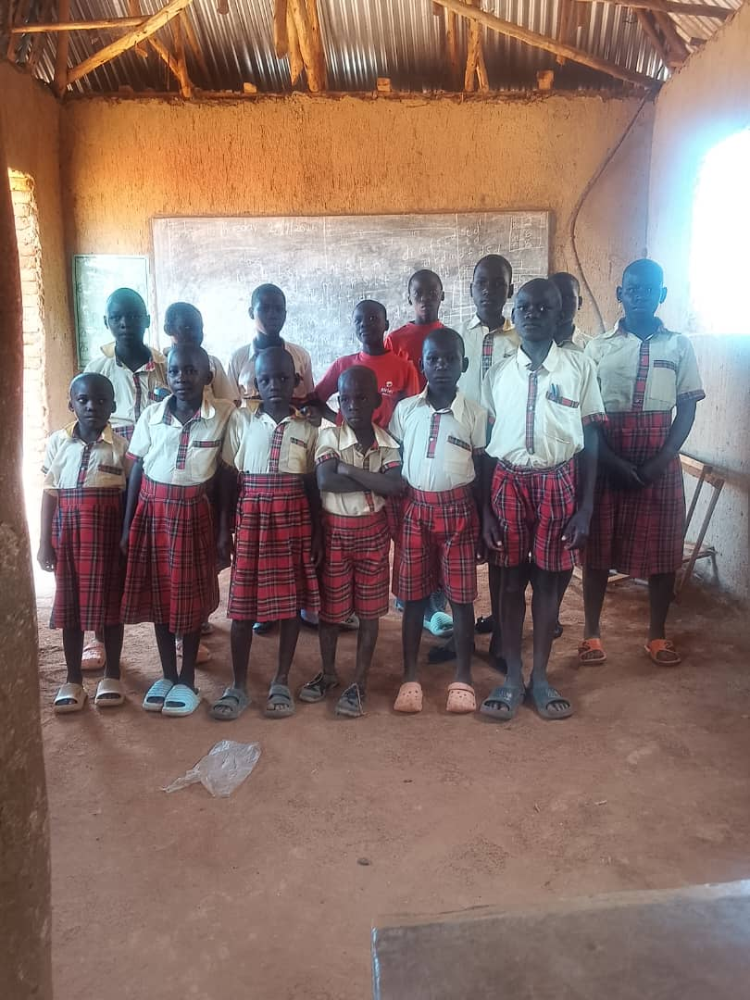

Health & community
Wellbeing belongs alongside learning.
Goodwill’s objectives recognise that children learn best when schools and communities have stronger health, water and support systems.
Buvuma Island Schools Health and HIV Support Initiative
A respectful, school-connected approach.
BISHSI is an organisational initiative focused on health awareness and HIV support around island schools. Any activity should protect privacy, use age-appropriate information and avoid stigma.
School health awareness
Practical health information delivered with qualified partners.
Water and sanitation
Support for safer learning environments and community facilities.
Facilities
The mandate includes construction and rehabilitation of health centres, learning hubs and WASH systems.

Dignity is part of good programme design.
Health-related partnerships should be confidential, inclusive and led by qualified providers. Goodwill welcomes dialogue with public-health organisations and local institutions.
Discuss a health partnership